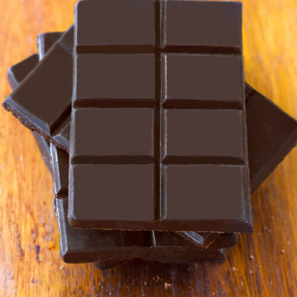

Chocolate

Description
If you live in a tropical country, as I do, is probably that you have access to cocoa beans. During this recipe we will go through the process of turning this into bitter chocolate.
Ingredients
- The cocoa beans from around 3 cacao fruits
- 2 cups of sugar
- 1 tbs of vanilla
- 1 tbs of olive oil
- 1 cup of milk
- 2 tbs of peanut butter
Special Materials
- 1 bag of charcoal
- A baking sheet
- A grill
- A chocolate mold
- 2 sheets of wax paper
Steps
- Break the cacao fruits to extract the cocoa beans
- Put the cocoa beans over the wax paper sheets and let them ferment 7 days.
- After those days have passed, put them in the baking sheet and roast them in the grill.
- When they are ready, peel the skin out of every bean.
- Put all the materials in a blender and blend 3 times until you have a pasty consistency.
- Spread the result over the chocolate mold and let it freeze for around 3 hours.
- Take your chocolate out of the mold and there it is! A bar of chocolate made by yourself, you should be very proud.
*This ingredients are equivalent to 1 or 2 chocolate bars